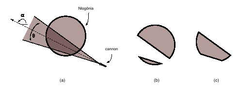

Since the King of Nlogonia built, decades earlier, an enormous protecting wall around the whole kingdom, its inhabitants have lived safely. The wall is massive, extremely reinforced, and has the format of a circle, enclosing all the King's domains.
However, in recent weeks inhabitants of Nlogonia are upset. There are rumors that scientists from Quadradonia, a barbaric nation in Nlogonia's neighborhood, have developed a lethal weapon, capable of blowing away anything on its reach.
The new weapon is a cannon that emits a beam of protons that spread with an angle from the cannon's mouth. The beam's direction is determined by an angle , measured counterclockwise from the x axis. The figure below illustrates (a) an example of an atack, (b) what would remain from Nlogonia and (c) the area that would be destroyed.

Given the cannon's coordinates, the beam's direction and spread angle, as well as the coordinate of the wall's center and radius, you must write a program to calculate the area of Nlogonia that will be destroyed.
The input contains several test cases. Each test case is composed by two lines. The first line contains three integers X, Y, R, with (X, Y) representing the coordinates of the protection wall's center (
0 X1000 and
0Y1000), and radius (
1R100). The second line contains four integers P, Q, A and T, with (P, Q) representing the cannon's coordinates (
0P1000 and
0Q1000), A representing the beam's direction, in degrees (
0A359), and T representing the spread angle, also in degrees (
1T179). The angle A is measured counter-clockwise from the x axis, and the cannon is always outside the protecting wall.
X1000 and
0Y1000), and radius (
1R100). The second line contains four integers P, Q, A and T, with (P, Q) representing the cannon's coordinates (
0P1000 and
0Q1000), A representing the beam's direction, in degrees (
0A359), and T representing the spread angle, also in degrees (
1T179). The angle A is measured counter-clockwise from the x axis, and the cannon is always outside the protecting wall.
The end of input is indicated by a line which contains three zeros, separated by single spaces.
For each test case in the input your program should print a single line, containing a real number, written with a precision of one decimal place, indicating the area of Nlogonia that would be destroyed by the atack.
1 1 1
3 1 180 90
4 4 3
8 4 90 90
4 4 3
8 4 180 179
0 0 0 0
3.1
0.2
28.3